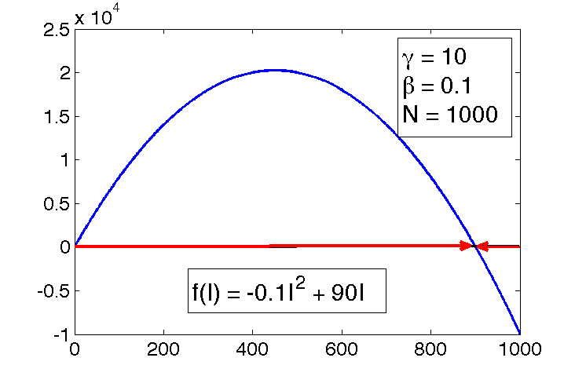

11 Graphical analysis of ordinary differential equations
We now proceed from linear ODEs to more complicated nonlinear equations. In contrast to linear differential equations, which can be solved in general, nonlinear differential equations may not be solvable even theoretically. Even though the solutions cannot be written down, they exist and can exhibit much more interesting behaviors than the exponential solutions we have seen. When solutions cannot be found on paper, we have two options: 1) use qualitative or graphical tools, such as finding equilibrium points and their stability, to predict the long-term dynamics of the solution; 2) construct numerical solutions that approximate the true solution. In this chapter we concentrate on the qualitative approach to analyzing ODEs, which allows one to predict the behavior of solutions of any autonomous ODE based on the graph of the defining function of the equation. In this chapter you will learn to do the following:
find equilibrium values of an ODE
analyze the stability of equilibria based on the graph of the defining function
write down stability conditions analytically
use graphical techniques to predict the behavior of the solution of a difference equation without solving it
build basic compartment epidemiology models
11.1 Building nonlinear ODEs
The simple, linear population growth models we have seen in the last chapter assume that the per capita birth and death rates are constant, that is, they stay the same regardless of population size. The solutions for these models either grow or decay exponentially, but in reality, populations do not grow without bounds. It is generally true that the larger a population grows, the more scarce the resources, and survival becomes more difficult. For larger populations, this could lead to higher death rates, or lower birth rates, or both.
How can we incorporate this effect into a quantitative model? We will assume there are separate birth and death rates, and that the birth rate declines as the population grows, while the death rate increases. Suppose there are inherent birth rates \(b\) and \(d\), and the overall birth and death rates \(B\) and \(D\) depend linearly on population size \(P\): \(B = b - aP\) and \(D = d + cP\).
To model the rate of change of the population, we need to multiply the rates \(B\) and \(D\) by the population size \(P\), since each individual can reproduce or die. Also, since the death rate \(D\) decreases the population, we need to put a negative sign on it. The resulting model is:
\[ \dot P = BP - DP = [(b-d)-(a+c)P]P \] (logistic-ode)
The parameters of the model, the constants \(a,b,c,d\), have different meanings. Performing dimensional analysis, we find that \(b\) and \(d\) have the dimensions of \(1/[t]\), the same as the rate \(r\) in the exponential growth model. However, the dimensions of \(a\) (and \(c\)) must obey the relation: \([P]/[t] = [a][P]^2\), and thus,
\[ [a]=[c] = \frac{1}{[t][P]} \]
This shows that the constants \(a\) and \(c\) have to be treated differently than \(b\) and \(d\). Let us define the inherent growth rate of the population, to be \(r_0=b-d\) (if the death rate is greater than the birth rate, the population will inherently decline). Then let us introduce another constant \(K\), such that \((a+c)=r_0/K\). It should be clear from the dimensional analysis that \(K\) has units of \(P\), population size. Now we can write down the logistic equation in the canonical form:
\[ \dot P = r\left(1-\frac{P}{K}\right)P \]
This model can be re-written as \(\dot P = aP -bP^2\), so it is clear that there is a linear term (\(aP\)) and a nonlinear term (\(-bP^2\)). When \(P\) is sufficiently small(and positive) the linear term is greater, and the population grows. When \(P\) is large enough, the nonlinear term wins and the population declines.
It should be apparent that there are two fixed points, at \(P=0\) and at \(P=K\). The first one corresponds to a population with no individuals. On the other hand, \(K\) signifies the population at which the negative effect of population size balances out the inherent population growth rate, and is called the carrying capacity of a population in its environment Otto and Day (2007). We will analyze the qualitative behavior of the solution, without writing it down, in the next section of this chapter.
11.2 Qualitative analysis of ODEs
In this section we will analyze the behavior of solutions of an autonomous ODE without solving it on paper. Generally, ODE models for realistic biological systems are nonlinear, and most nonlinear differential equations cannot be solved analytically. We can make predictions about the behavior, or dynamics of solutions by considering the properties of the defining function, which is the function on the right-hand-side of a general autonomous ODE:
\[ \frac{dx}{dt} = f(x) \]
11.2.1 graphical analysis of the defining function
The defining function relates the value of the solution variable \(x\) to its rate of change \(dx/dt\). For different values of \(x\), the rate of change of \(x(t)\) is different, and it is defined by the function \(f(x)\). There are only three options:
if \(f(x) > 0\), \(x(t)\) is increasing at that value of \(x\)
if \(f(x) < 0\), \(x(t)\) is decreasing at that value of \(x\)
if \(f(x) = 0\), \(x(t)\) is not changing that value of \(x\)
To determine for which values of \(x\) the solution \(x(t)\) increases and decreases, it enough to look at the plot of \(f(x)\). On the intervals where the graph of \(f(x)\) is above the \(x\)-axis \(x(t)\) increases, on the intervals where the graph of \(f(x)\) is below the \(x\)-axis, \(x(t)\) decreases. The roots (zeros) of \(f(x)\) are special cases, they separate the range of \(x\) into the intervals where the solution grows and and where it decreases. This seems exceedingly simple, and it is, but it provides specific information about \(x(t)\), without knowing how to write down its formula.
For an autonomous ODE with one dependent variable, the direction of the rate of change prescribed by the differential equation can be graphically represented by sketching the flow on the line of the dependent variable. The flow stands for the direction of change at every point, specifically increasing, decreasing, or not changing. The flow is plotted on the horizontal x-axis, so if \(x\) is increasing, the flow will be indicated by a rightward arrow, and if it is decreasing, the flow will point to the left. The fixed points separate the regions of increasing (rightward) flow and decreasing (leftward) flow.
Example. Consider a linear ODE the likes of which we have solved in section
\[ \frac{dx}{dt} = 4x -100 \]
The defining function is a straight line vs. \(x\), its graph is shown in figure \(\ref{fig:ch16_flow_linear}\)a. Based on this graph, we conclude that the solution decreases when \(x<25\) and increases when \(x>25\). Thus we can sketch the solution \(x(t)\) over time, without knowing its functional form. The dynamics depends on the initial value: if \(x(0)<25\), the solution will keep decreasing without bound, and go off to negative infinity; if \(x(0)>25\), the solution will keep decreasing without bound, and go off to positive infinity. This is shown by plotting numerical solutions of this ODE for several initial values in figure \(\ref{fig:ch16_flow_linear}\)b. The dotted line shows the location of the special value of 25 which separates the interval of growth from the interval of decline.
Example. Now let us analyze a nonlinear ODE, specifically the logistic model with the following parameters:
\[ \frac{dP}{dt} =0.3P\left(1-\frac{P}{40}\right) \]
The defining function is a downward-facing parabola with two roots at \(P=0\) and \(P=90\), as shown in {numref}fig-flow-log. Between the two roots, the defining function is positive, which means the derivative \(dP/dt\) is positive too, so the solution grows on that interval and approaches the value 90. For \(P<0\) the solution decreases without bound; for \(P>90\) the solution also decreases and converges to 90, since a solution cannot go through a value at which its derivative is 0.
Example: semi-stable fixed point. Let un analyze another nonlinear ODE
\[ \frac{dx}{dt} = -x^3 + x^2 \]
The flow of the solutions is plotted in {numref}fig-flow-semi, showing two fixed points at \(x = 0, 1\). The red arrows on the x-axis show the direction of the flow in the three different regions separated by the zeros of \(f(x)\). For \(x < 0\), solutions decrease without bound; for \(0<x<1\) solutions increase and approach 1 and for \(x>1\) solutions decrease and approach 1.

To summarize, the defining function of the ODE determines the rate of change of the solution \(x(t)\) depending on the value of \(x\). The graphical approach to finding areas of right and left flow is based on graphing the function \(f(x)\), and dividing the x-axis based on the sign of \(f(x)\). In the areas where \(f(x) > 0\), its graph is above the x-axis, and the flow is to the right; conversely, when \(f(x) < 0\), its graph is below the x-axis, and the flow is to the left. The next subsection puts this approach in a more analytic framework.
11.2.2 fixed points and stability
We have seen that the dynamics of solutions of differential equations depend on the initial value of the dependent variable: for some values the solution increases, for others it decreases, and for intermediate values it remains the same. Those special values separating intervals of increase and decrease are called fixed points (or equilibria), and the first step to understanding the dynamics of an ODE is finding its fixed points. A fixed point is a value of the solution at which the dynamical system stays constant, thus, the derivative of the solution must be zero. Here is the formal definition:
For an ordinary differential equation \(\dot x = f(x)\), a point \(x^*\) which satisfies \(f(x^*)=0\) is called a fixed point or equilibrium, and the solution with the initial condition \(x(0)=x^*\) is constant over time \(x(t)=x^*\).
Example. The linear equation \(\dot x = rx\) has a single fixed point at \(x^* = 0\). For a more interesting example, consider a logistic equation: \(\dot x = x - x^2\). Its fixed points are the solutions of \(x - x^2 = 0\), therefore there two fixed points: \(x^* = 0, 1\). We know that if the solution has either of the fixed points as the initial condition, it will remain at that value for all time.
Locating the fixed points is not sufficient to predict the global behavior of the dynamical system, however. What happens to the solution of a dynamical system if the initial condition is very close to an equilibrium, but not precisely at it? Put another way, what happens if the equilibrium is perturbed? The solution may be attracted to the equilibrium value, that is, it approaches it ever-closer, or else it is not. In the first case, this is called a stable equilibrium, because a small perturbation does not dramatically change the long-term behavior of the solution. In the latter case, the equilibrium is called unstable, and the solution perturbed from the equilibrium never returns. These concepts are formalized in the following definition
A fixed point \(x^*\) of an ODE \(\dot x = f(x)\) is called a stable fixed point (or sink) if for a sufficiently small number \(\epsilon\), the solution \(x(t)\) with the initial condition \(x_0 = x^* + \epsilon\) approaches the fixed point \(x^*\) as \(t \rightarrow \infty\). If the solution \(x(t)\) does not approach \(x^*\) for all nonzero \(\epsilon\), the fixed point is called an unstable fixed point (or source).
To determine whether a fixed point is stable analytically we use the approach called linearization, which involves replacing the function \(f(x)\) with a linear approximation. Let us define \(\epsilon(t)\) to be the deviation of the solution \(x(t)\) from the fixed point \(x^*\), so we can write \(x(t) = x^* + \epsilon(t)\). Assuming that \(\epsilon(t)\) is small, we can write the function \(f(x)\) using Taylor’s formula:
\[ f(x^*+\epsilon(t))= f(x^*)+f'(x^*) \epsilon(t) + ... = f'(x^*) \epsilon(t) + ... \]
The term \(f(x^*)\) vanished because it is zero by definition \(\ref{def:ch16_fixedpt}\) of a fixed point. The ellipsis indicates all the terms of order \(\epsilon(t)^2\) and higher, which are very small if \(\epsilon(t)\) is small, and thus can be neglected. Thus, we can write the following approximation to the ODE \(\dot x = f(x)\) near a fixed point:
\[ \dot x = \frac{d(x^* + \epsilon(t))}{dt} = \dot \epsilon(t) = f'(x^*) \epsilon(t) \]
Thus we replaced the complicated nonlinear ODE near a fixed point with a linear equation, which approximates the dynamics of the deviation \(\epsilon(t)\) near the fixed point \(x^*\); note that the derivative \(f'(x^*)\) is a constant for any given fixed point. In section \(\ref{sec:math15}\) we classified the behavior of solutions for the general linear ODE \(\dot x = rx\), and now we apply this classification to the behavior of the deviation \(\epsilon(t)\). If the multiple \(f'(x^*)\) is positive, the deviation \(\epsilon(t)\) is growing, the solution is diverging away from the fixed point, and thus the fixed point is unstable. If the multiple \(f'(x^*)\) is negative, the deviation \(\epsilon(t)\) is decaying, the solution is converging to the fixed point, and thus the fixed point is stable. Finally, there is the borderline case of \(f'(x^*) = 0\) which is inconclusive, and the fixed point may be either stable or unstable. The derivative stability analysis is summarized in the following:
For an autonomous ODE in the form \(\dot x = f(x)\), a fixed point \(x^*\) can be classified as follows:
- \(f'(x^*) > 0\): the slope of \(f(x)\) at the fixed point is positive, then the fixed point is .
- \(f'(x^*) < 0\): the slope of \(f(x)\) at the fixed point is negative, then the fixed point is .
- \(f'(x^*) = 0\): stability cannot be determined from the derivative.
Therefore, knowing the derivative or the slope of the defining function at the fixed point is enough to know its stability. If the derivative has the discourtesy of being zero, the situation is tricky, because then higher order terms that we neglected make the difference. We will mostly avoid such borderline cases, but they are important in some applications Strogatz (2001).
=======Therefore, knowing the derivative or the slope of the defining function at the fixed point is enough to know its stability. If the derivative has the discourtesy of being zero, the situation is tricky, because then higher order terms that we neglected make the difference. We will mostly avoid such borderline cases, but they are important in some applications (strogatz_nonlinear_2001?).
<<<<<<< Updated upstream >>>>>>> Stashed changes ======= >>>>>>> Stashed changesThe derivative of the defining function \(f'(x)\) is not the second derivative of the solution \(x(t)\). This is a common mistake, because the function \(f(x)\) is equal to the time derivative of \(x(t)\). However, the derivative \(f'(x)\) is not with respect to time, it is with respect to x, the dependent variable. In other words, it reflects the slope of the graph of the defining function \(f(x)\), not the curvature of the graph of the solution \(x(t)\).
11.2.3 outline of qualitative analysis of an ODE
To summarize, here is an outline of the steps for analyzing the behavior of solutions of an autonomous one-variable ODE. These tasks can be accomplished either by plotting the defining function \(f(x)\) and finding the fixed points and their stability based on the plot, or by solving for the fixed points on paper, then finding the derivative \(f'(x)\) and plugging in the values of the fixed points to determine their stability. Either approach is valid, but the analytic methods are necessary when dealing with models that have unknown parameter values, which makes it impossible to represent the defining function in a plot.
find the fixed points by setting the defining function \(f(x)=0\) and solving for values of \(x^*\)
divide the domain of \(x\) into intervals separated by fixed points \(x^*\)
determine on which interval(s) the solution \(x(t)\) is increasing and on which it is decreasing
use derivative stability analysis (graphically or analytically) to determine which fixed points are stable
sketch the solutions \(x(t)\) starting at different initial values, based on the stability analysis and whether the solution is increasing or decreasing in a particular interval
Analysis of linear ODE \(dx/dt = 4x -100\)
find the fixed points by setting the defining function to 0: \(0 = 4x -100\), so there is only one fixed point \(x^* = 25\)
divide the domain of \(x\) into intervals separated by fixed points \(x^*\): the intervals are \(x<25\) and \(x>25\)
the solution is decreasing on the interval \(x<25\) because \(f(x)<0\) there, and the solution is increasing on the interval \(x>25\) because \(f(x)>0\)
the derivative \(f'(x)\) at the fixed point is 4, so the fixed point is unstable
solutions \(x(t)\) behave as follows: solutions with initial values below \(x^*=25\) decreasing, and those with initial values above \(x^*=25\) increasing.
Analysis of the logistic ODE \(dP/dt =0.3P(1-P/40)\)
find the fixed points by setting the defining function to 0: \(0 = 0.3P(1-P/40)\). The two solutions are \(P^*=0\) and \(P^*=40\).
divide the domain of \(P\) into intervals separated by fixed points \(P^*\): the intervals are \(P<0\); \(0<P<40\); and \(P>40\)
the solution is decreasing on the interval \(P<0\) because \(f(P)<0\) there, the solution is increasing on the interval \(0<P<40\) because \(f(P)>0\), and the solution is decreasing for \(P>40\) because \(f(P)<0\) there
the derivative is \(f'(P)=0.3-0.3P/20\); since \(f'(0)=0.3 > 0\), the fixed point is unstable; since \(P'(40)=-0.3<0\), the fixed point is stable
solutions \(P(t)\) behave as follows: solutions with initial values below \(P^*=0\) decreasing, those with initial values between 0 and 40 are increasing and asymptotically approaching 40, and those with initial values above 40 decreasing and asymptotically approaching 40.
This can be done more generally using the derivative test: taking the derivative of the function on the right-hand-side (with respect to \(P\)), we get \(f'(P) = r(1-2\frac{P}{K})\). Assuming \(r>0\) (the population is viable), \(f'(0)= r\) is positive, and the fixed point is therefore unstable. This makes biological sense, since we assumed positive inherent population growth, so given a few individuals, it will increase in size. On the other hand, \(P'(K) = r(1-2) = -r\), so this fixed point is stable. Thus, according to the logistic model, a population with a positive inherent growth rate will not grow unchecked, like in the exponential model, but will increase until it reaches its carrying capacity, at which it will stay (if all parameters remain constant).
Analysis of the ODE \(dx/dt = -x^3 + x^2\) that has a semi-stable fixed point
find the fixed points by setting the defining function to 0: \(0 = -x^3 + x^2\). The two fixed points are \(x^*=0\) and \(x^*=1\).
divide the domain of \(x\) into intervals separated by fixed points \(x^*\): the intervals are \(x<0\); \(0<x<1\); and \(x>1\)
the solution is increasing on the interval \(x<0\) because \(f(x)>0\) there, the solution is increasing on the interval \(0<x<1\) because \(f(x)>0\), and the solution is decreasing for \(x>1\) because \(f(x)<0\) there
the derivative is \(f'(x)=-3x^2+2x\); since \(f'(0)=0\), the fixed point is undetermined; since \(f'(1)=-1<0\), the fixed point is stable.
the solutions \(x(t)\) with initial values below 0 are increasing and asymptotically approaching 0, those with initial values between 0 and 1 are increasing and asymptotically approaching 1, and those with initial values above 1 are decreasing and asymptotically approaching 1.
This example shows how graphical analysis can help when derivative analysis is undetermined. The red arrows on the x-axis of {numref}fig-flow-semi show the direction of the flow in the three different regions separated by the fixed points. Flow is to the right for \(x<1\), to the left for for \(x>1\); it is clear that the arrows approach the fixed point from both sides, and thus the fixed point is stable, as the negative slope of \(f(x)\) at \(x=1\) indicates. One the other hand, the fixed point at \(x=0\) presents a more complicated situation: the slope of \(f(x)\) is zero, and the flow is rightward on both sides of the fixed point. This type of fixed point is sometimes called semi-stable, because it is stable when approached from one side, and unstable when approached from the other.
11.3 Modeling the spread of infectious disease
The field of epidemiology studies the distribution of disease and health states in populations. Epidemiologists describe and model these issues with the goal of helping public health workers devise interventions to improve the overall health outcomes on a large scale. One particular topic of interest is the the spread of infectious disease and how best tor respond to it.. Because epidemiology is concerned with large numbers of people, the models used in the field do not address the details of an individual disease history. One approach to modeling this is to put people into categories, such as susceptible (those who can be infected but are not), infectious (those who are infected and can spread the disease), and recovered (those who cannot be infected or spread disease, shown in {numref}fig-sir-model. This type of models is called a compartment model and they are they commonly used to represent infectious disease on a population level both for deterministic models (e.g. ODEs) and stochastic models (e.g. Markov models). Dividing people into categories involves the assumption that everyone in a particular category behaves in the same manner: for instance, all susceptible people are infected with the same rate and all infected people recover with the same rate.

Let us construct an ODE to describe a two-compartment epidemiology model. There are two dependent variables to be tracked: the number of susceptible (\(S\)) and infected (\(I\)) individuals in the population. The susceptible individuals can get infected, while the infected ones can recover and become susceptible again. The implicit assumption is that there is no immunity, and recovered individuals can get infected with the same ease as those who were never infected. There are some human diseases for which this is true, for instance the common cold or gonorrhea. Transitions between the different classes of individuals can be summarized by the scheme in figure

Here \(\beta\) is the individual rate of infection, also known as the transmission rate, and \(\gamma\) is the individual rate of recovery. There is an important distinction between the processes of infection and recovery: the former requires an infected individual and a susceptible individual, while the latter needs only an infected individual. Therefore, it is reasonable to suppose that the rate of growth of infected individuals is the product of the individual transmission rate \(\beta\) and the product of the number of infected and susceptible individuals. The overall rate of recovery is the individual recovery rate \(\gamma\) multiplied by the number of the infected. This leads to the following two differential equations:
\[ \begin{aligned} \dot S &=& -\beta IS + \gamma I \\ \dot I &=& \beta I S - \gamma I \end{aligned} \]
Note that, as in the chemical kinetics models, the two equations add up to zero on the right hand side, leading to the conclusion that \(\dot S + \dot I = 0\). Therefore, the total number of people is a conserved quantity \(N\), which does not change. This makes sense since we did not consider any births or deaths in the ODE model, only transitions between susceptible and infected individuals.
We can use the conserved quantity \(N\) to reduce the two equations to one, by the substitution of \(S = N -I\):
\[ \dot I = \beta I (N - I) - \gamma I \]
This model may be analyzed using qualitative methods that were developed in this chapter, allowing prediction of the dynamics of the fraction of infected for different transmission and recovery rates. First, let us find the fixed points of the differential equation. Setting the equation to zero, we find:
\[ 0 = \beta I (N - I) - \gamma I \Rightarrow I^* = 0; \; I^* = N - \gamma/\beta \]
This means that there are two equilibrium levels of infection: either nobody is infected (\(I^* = 0\)) or there is some persistent number of infected individuals ($ I^* = N - /$). Notice that the second fixed point is only biologically relevant if $N > /$.
Use the derivative test to check for stability. First, find the general expression for derivative of the defining function: $f’(I) = -2 I + N - $.
The stability of the fixed point \(I^* = 0\) is found by plugging in this value into the derivative formula: \(f'(0) = \beta N - \gamma\). We learned in section \(\ref{sec:math16}\) that a fixed point is stable if the derivative of the defining function is negative. Therefore, \(I^* = 0\) is stable if \(\gamma - \beta N > 0\), and unstable otherwise. This gives us a stability condition on the values of the biological parameters. If the recovery rate \(\gamma\) is greater than the rate of infection for the population (the transmission rate multiplied by the population size) \(\beta N\), then the no-infection equilibrium is stable. This predicts that the infection dies out if the recovery rate is faster than the rate of infection, which makes biological sense.
Similarly, we find the stability of the second fixed point \(I^* = N - \gamma/\beta\) by substituting its value into the derivative, to obtain \(f'(N - \gamma/\beta) = \gamma - \beta N\). By the same logic, as above, this fixed point is stable if \(\gamma - \beta N < 0\), or if \(\gamma < \beta N\). This is a complementary condition for the fixed point at 0, that is, only one fixed point can be stable for any given parameter values. In the biological interpretation, if the transmission rate \(\beta N\) is greater than the recovery rate \(\gamma\), then the epidemic will persist.
We can use our graphical analysis skills to illustrate the situation. Consider a situation in which \(\gamma < \beta N\). As predicted by stability analysis, the zero infection equilibrium should be unstable, and the equilibrium at \(N - \gamma/\beta\) should be stable. In order to plot the function $f(I) = I (N - I) - I $, we choose the specific parameter values and plot the definining function in {numref}fig-sis-beta. The direction of the flow on the \(I\)-axis prescribed by the defining function \(f(I)\) shows that solutions approach the fixed point at \(N - \gamma/\beta\) from both directions, which make it a stable fixed point, while diverging from \(I=0\).

On the other hand, if \(\gamma > \beta N\), stability analysis predicts that the no-infection equilibrium (\(I=0\)) is stable. {numref}fig-sis-gamma shows the plot of the defining function where the effective infection rate \(\beta N\) is greater than the recovery rate \(\gamma\). The flow on the \(I\)-axis is toward the zero equilibrium, therefore it is stable. Note that the second equilibrium at \(I^* = N - \gamma/\beta\) is negative, and thus has no biological significance. The solutions, if the initial value is positive, all approach 0, so the infection inevitably dies out.

Mathematical modeling of epidemiology has been a success story in the last few decades. Public health workers routinely estimate the parameter called the basic reproductive number \(R_0\) defined to be the average number of new infections caused by a single infected individual in a susceptible population. This number comes out of our analysis above, where we found \(R_0 = N \beta / \gamma\) to determine whether or not an epidemic persisted Brauer and Castillo-Chavez (2011). This number is critical in more sophisticated models of epidemiology.
Mathematical models are used to predict the time course of an epidemic, called the epidemic curve and then advise on the public health interventions that can reduce the number of affected individuals. In reality, most epidemic curves have the shape similar to the data from the Ebola virus epidemic in {numref}fig-ebola1 and {numref}fig-ebola2. Most such curves show an initial increase in infections, peaking, and the declining to low levels, which is fundamentally different than the solution curves we obtained from the two-compartment model. To describe dynamics of this nature, models with more than two variables are needed, such as classic three-compartment SIR models (susceptible-infected-recovered) models and their modifications Brauer and Castillo-Chavez (2011). Being able to predict the future of an epidemic based on \(R_0\) and other parameters allows public health officials to prepare and deploy interventions (vaccinations, quarantine, etc.) that have the best shot at minimizing the epidemic.